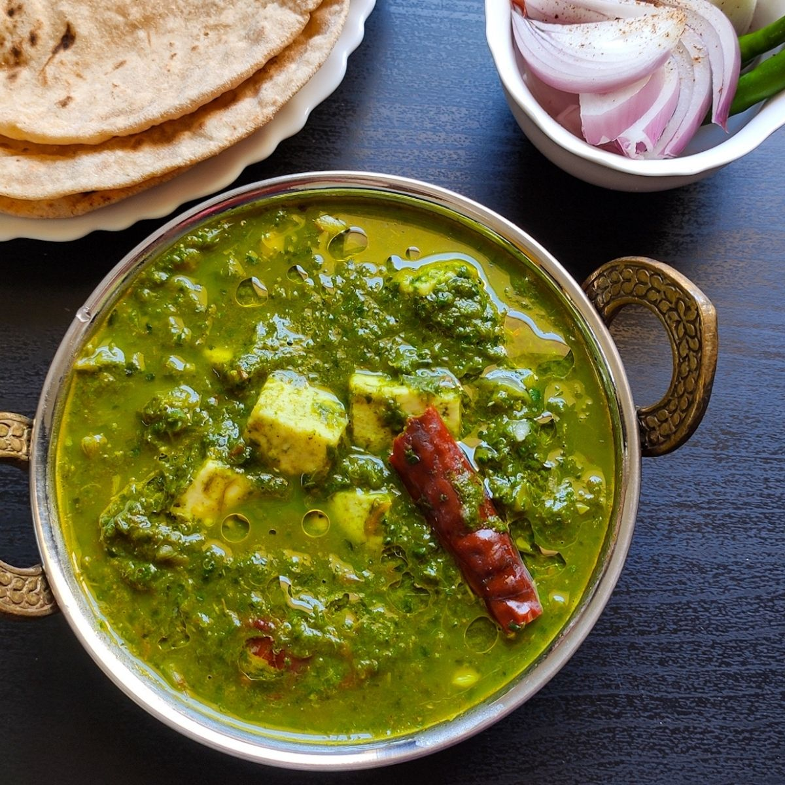

Ingredients:
- 2 cups spinach (palak), blanched and pureed
- 200g paneer, cubed
- 1 onion, finely chopped
- 1 tomato, pureed
- 1 tablespoon ginger-garlic paste
- 1/2 teaspoon cumin seeds
- 1/2 teaspoon garam masala
- 1/2 teaspoon red chili powder
- 1/2 teaspoon turmeric powder
- Salt to taste
- 2 tablespoons oil or ghee
Instructions:
- Heat oil in a pan, add cumin seeds, and let them splutter.
- Add chopped onions and sauté until golden brown.
- Stir in ginger-garlic paste and cook for 1-2 minutes until fragrant.
- Add tomato puree and cook until the oil separates from the mixture.
- Add spinach puree, spices, and salt. Cook for 5-7 minutes.
- Add paneer cubes and gently mix. Cook for another 5 minutes.
- Serve hot with roti, naan, or rice.
Tips:
- For a richer flavor, add a little cream before serving.
- You can also add a pinch of kasuri methi for enhanced taste.